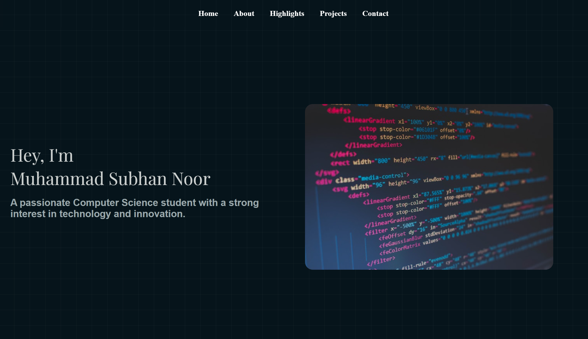

Projects
This section includes all the projects I have completed during my
university studies, as well as additional independent or collaborative projects undertaken outside
of
academic requirements.

Game Description
The character moves using the A and D keys, and Space for jumping.
This game revolves around unexpected hurdles, offering players a thrilling and unpredictable experience. In some levels, blocks may appear filled but are actually empty. Buttons can trigger traps or obstacles, and some hurdles may eliminate you even before you touch them. To add to the excitement, your movement keys might even get inverted!
Inspired by the game Levil Devil, this game is designed to surprise and challenge players at every turn. I hope you find it both fun and engaging! For code Visit My GitHub
The character moves using the A and D keys, and Space for jumping.
This game revolves around unexpected hurdles, offering players a thrilling and unpredictable experience. In some levels, blocks may appear filled but are actually empty. Buttons can trigger traps or obstacles, and some hurdles may eliminate you even before you touch them. To add to the excitement, your movement keys might even get inverted!
Inspired by the game Levil Devil, this game is designed to surprise and challenge players at every turn. I hope you find it both fun and engaging! For code Visit My GitHub

Portfolio
Watch on LinkedIn
Portfolio Description
This is a responsive personal portfolio website developed using HTML, CSS, and JavaScript. It includes multiple sections like Home, About, Skills, Highlights, Projects, and Contact, all styled with a modern aesthetic using CSS Grid and Google Fonts. The navigation bar features a glassmorphism effect with smooth scrolling. The Projects section includes an interactive carousel and modal popups that display project details and external links using JavaScript. A separate projects page provides extended descriptions and visuals. The design focuses on clean layout, subtle animations, and a consistent theme to ensure an engaging user experience across devices. For code Visit My GitHub
This is a responsive personal portfolio website developed using HTML, CSS, and JavaScript. It includes multiple sections like Home, About, Skills, Highlights, Projects, and Contact, all styled with a modern aesthetic using CSS Grid and Google Fonts. The navigation bar features a glassmorphism effect with smooth scrolling. The Projects section includes an interactive carousel and modal popups that display project details and external links using JavaScript. A separate projects page provides extended descriptions and visuals. The design focuses on clean layout, subtle animations, and a consistent theme to ensure an engaging user experience across devices. For code Visit My GitHub